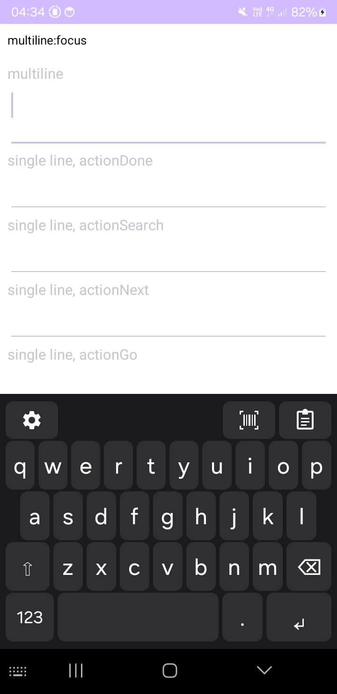
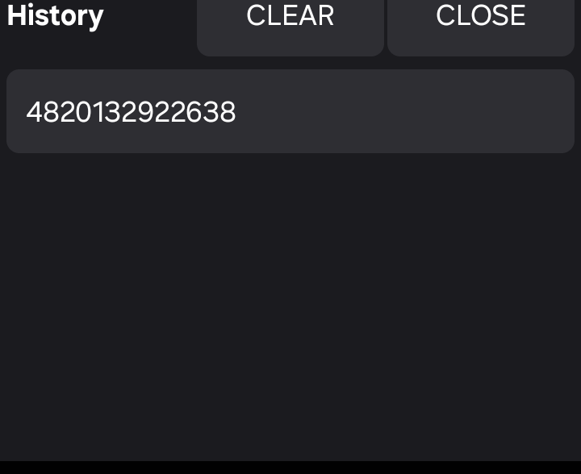

Scanner Keyboard is an on-screen Android keyboard. It scans barcodes and QR codes.
It puts scanned text into the text field you use. It works with no network access. Continuous scanning and form-filling actions are one switch away in the scanner view.
Try it with ready-made test codes — no products required. Read the privacy policy or the third-party licenses.


Get it on Google Play, or get the source code on GitHub: ubaierbhat/scanner-keyboard.